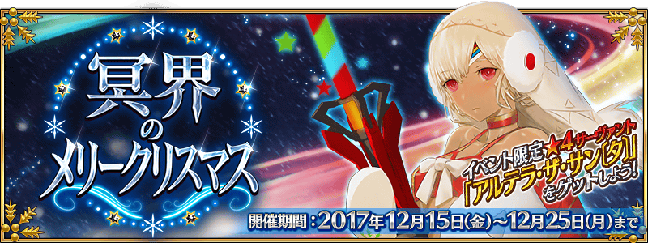
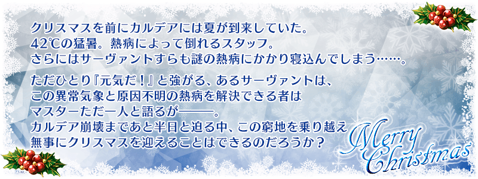
◆活動舉辦期間◆
2017年12月15日(五) 17:00～12月25日(一) 22:59
◆活動概要◆
舉辦期間限定活動「冥界的聖誕快樂」！
為了拯救因突然到訪的異常氣象與連Servant也被侵蝕的謎之熱病而瀕臨全滅危機的迦勒底，在單身前赴那處的Master前現身的新聖誕老人究竟是？
請盡情享受贈予由奈須きのこ執筆完全原創故事的期間限定活動「冥界的聖誕快樂」。
活動期間中，會在管理室(ターミナル)出現活動關卡！
除了能享受故事的主線關卡逐日開放外，通過第1節後會開放可反覆刷來獲得活動道具的自由關卡。
挑戰活動關卡收集「冥界之砂」，從阿提拉・the・San〔誕〕收到聖誕禮物吧！
另外，在通過主線關卡第8節的通過後，用從禮物陣容入手「軍神交換券」交換的話，阿提拉・the・San〔誕〕會正式加入。
推進活動，取得「★4(SR)阿提拉・the・San〔誕〕」吧！
◆活動參加條件◆
只限通過「第七特異點 絕對魔獸戰線 巴比倫尼亞」的Master才能參加
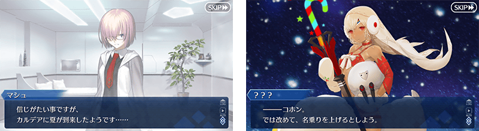
隨著期間限定活動「冥界的聖誕快樂」舉辦，在永久舉辦的AP消耗量1/2狀態，自12月13日(三) 17:00再追加AP消耗量1/2，主線關卡第七特異點為止的AP消耗量變為1/4！
◆舉辦期間◆
2017年12月13日(三) 17:00～12月25日(一) 22:59
◆對象關卡◆
第七特異點為止的主線關卡
※請注意自由關卡為對象外。
※在戰鬥中撤退的情況AP消耗也是1/4。
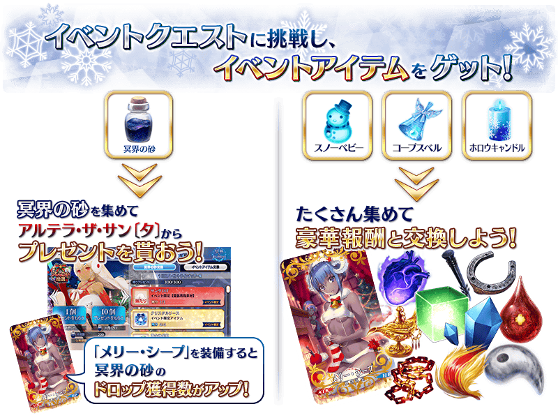
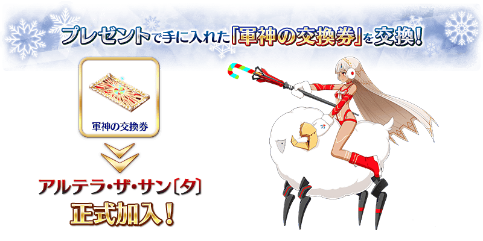
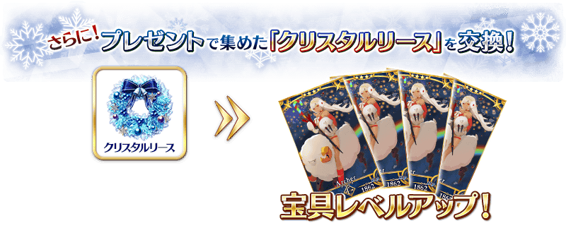
※「軍神交換券」與阿提拉・the・San〔誕〕的交換在主線關卡第8節通過後開放。
※「水晶花圈」與阿提拉・the・San〔誕〕【寶具強化用】的交換在阿提拉・the・San〔誕〕正式加入後開放。
能享受故事的主線關卡會逐日開放。
通過主線關卡第1節的話，會開放可收集活動道具的自由關卡。
| 關卡名 | 時間表 |
|---|---|
| 主線關卡 第1節・第2節 | 12月15日(五) 17:00～ 12月25日(一) 22:59 |
| 主線關卡 第3節 | 12月16日(六) 17:00～ 12月25日(一) 22:59 |
| 主線關卡 第4節 | 12月17日(日) 17:00～ 12月25日(一) 22:59 |
| 主線關卡 第5節 | 12月18日(一) 17:00～ 12月25日(一) 22:59 |
| 主線關卡 第6節 | 12月19日(二) 17:00～ 12月25日(一) 22:59 |
| 主線關卡 第7節・第8節 | 12月20日(三) 17:00～ 12月25日(一) 22:59 |

在活動關卡收集「冥界之砂」，從阿提拉・the・San〔誕〕收到聖誕禮物吧！
禮物會在每個陣容放入1個大獎道具。
抽到大獎道具，執行「禮物重置」的話，會補充新的大獎道具。
有大獎道具的陣容有10次份！
收到大獎道具點擊「禮物重置」鍵，補充大獎道具吧！
※第11次以後不會補充大獎道具及「黃金的果實」「白銀的果實」。入手陣容內的全道具才能進行「禮物重置」。
※收集活動道具的「水晶花圈」的話，能用來交換阿提拉・the・San〔誕〕的寶具等級提升等豪華道具。

◆禮物陣容◆
|
【大獎道具】 【活動道具】 【技能強化＆靈基再臨素材】 【技能強化素材】 【其他道具】 |
◆超值攻略方法・其1◆
將特定的Servant編入隊伍的話，會提升「雪人寶寶」「死屍鈴鐺」「虛空蠟燭」的掉落獲得數！
※自12月9日(六) 21:00，在Servant選擇畫面和Servant強化畫面等中，追加「下次活動對象」篩選器。
由於是只顯示於下個舉辦活動活躍Servant的便利功能，敬請活用。
※阿提拉(Saber)、阿提拉・the・San〔誕〕、艾蕾修卡的3位不會在「下次活動對象」篩選器顯示，本活動開始後會在「活動加成」篩選器顯示。
【對象Servant】
| 職階 | 稀有度 | Servant名 |
|---|---|---|
| Saber | ★★★★★ | |
| Archer | ★★★★★ | |
| ★★★★ | ||
| Lancer | ★★★★★ | |
| ★★★★★ | ||
| ★★★★ | ||
| ★★★★ | ||
| ★★★ | ||
| ★★ | ||
| ★★ | ||
| Rider | ★★★★ | |
| ★★★ | ||
| Caster | ★★★★★ | |
| ★★★★ | ||
| ★★★ | ||
| Shielder | ★★★ |
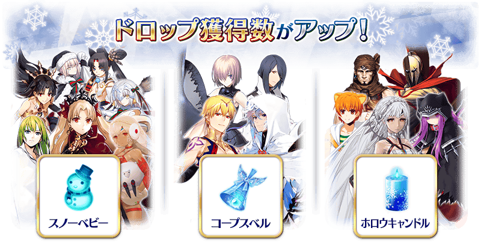
◆超值攻略方法・其2◆
裝備能在活動道具交換入手的活動限定概念禮裝「メリー・シープ」的話，會提升活動道具「冥界之砂」的掉落獲得數。
※請注意於各關卡的道具掉落率並非100％。
◆超值攻略方法・其3◆
裝備期間限定概念禮裝的話，會提升「雪人寶寶」「死屍鈴鐺」「虛空蠟燭」各自的掉落獲得數。
※請注意於各關卡的道具掉落率並非100％。
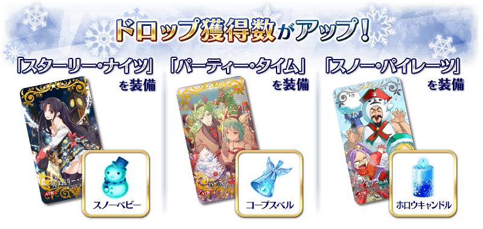
※12月13日(三) 20:30圖像修正
| 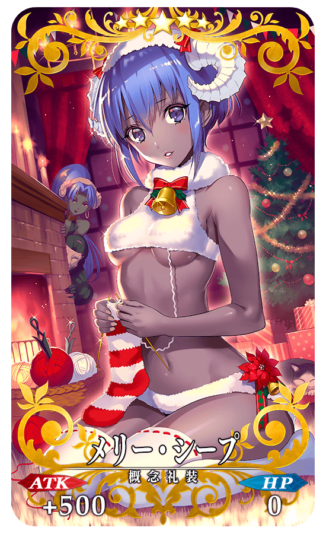 |
★★★★★SSR |

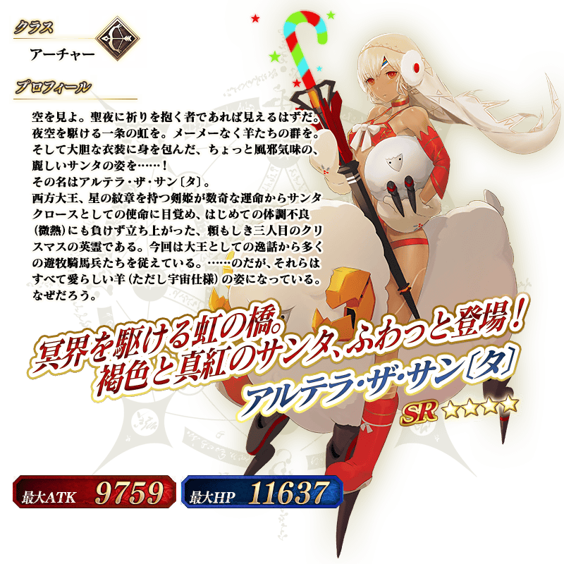
◆靈基再臨◆
使用在活動期間中的禮物外無法入手的「聖誕鬍子」，重複4次靈基再臨的話，卡面會有所變化！
※阿提拉・the・San〔誕〕不會隨靈基再臨使戰鬥角色的外觀變化。
介紹阿提拉・the・San〔誕〕的寶具演出！ 在「Fate/Grand Order」官方網站內的公告中，公開了「★4(SR)阿提拉・the・San〔誕〕」的寶具演出。敬請確認。
◆交換方法◆
交換期間:2017年12月15日(五) 17:00～12月31日(日) 11:59
※交換期間結束後「水晶花圈」「雪人寶寶」「死屍鈴鐺」「虛空蠟燭」「冥界之砂」「軍神交換券」會消失。
活動専用道具可自點擊管理室(ターミナル)畫面右上「活動報酬」的「活動道具交換」畫面，交換以下的道具。
※英靈結晶・流星之芙芙ALL★4(HP)會在通過「冥界的聖誕快樂」的主線關卡後開放。
◆能用水晶花圈交換的道具◆
|
【活動限定Servant】 【技能強化＆靈基再臨素材】 【其他道具】 |
◆能用雪人寶寶交換的道具◆
|
【活動限定概念禮裝】 【技能強化＆靈基再臨素材】 【靈基再臨素材】 【其他道具】 |
◆能用死屍鈴鐺交換的道具◆
| 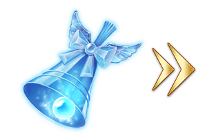 |
【活動限定概念禮裝】 【技能強化＆靈基再臨素材】 【靈基再臨素材】 【其他道具】 |
◆能用虛空蠟燭交換的道具◆
 |
【活動限定概念禮裝】 【技能強化＆靈基再臨素材】 【其他道具】 |
◆能用冥界之砂交換的道具◆
|
【其他道具】 |
以通過「冥界的聖誕快樂」的主線關卡第8節及「終局特異點」的Master為對象開放高難易度關卡「挑戰關卡」。 ◆挑戰關卡參加條件◆ ◆挑戰關卡初次通過報酬◆
挑戰關卡就算在通過後也不會消失，能無數次挑戦，可以變更Servant和概念禮裝的組合後再次挑戰。
※關卡通過報酬、戦利品、Master經驗值、魔術禮裝經驗值、絆點數只限在初次通過時獲得。
只限通過「冥界的聖誕快樂」的主線關卡第8節及「終局特異點」的Master才能參加
傳承結晶 1個
【12月22日(五) 17:00追記】
開放伊絲塔(Archer)與吉爾伽美什(Caster)的幕間物語！
◆開放時間◆
2017年12月22日(五) 18:00～
| 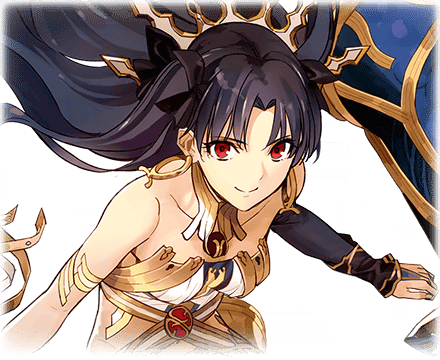 |
◆關卡通過報酬◆ |
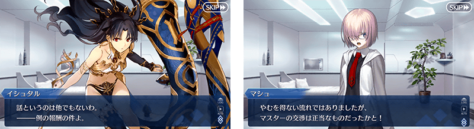
|
◆關卡通過報酬◆ |
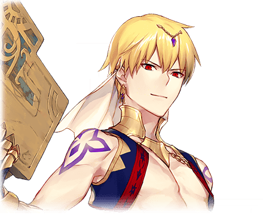 |
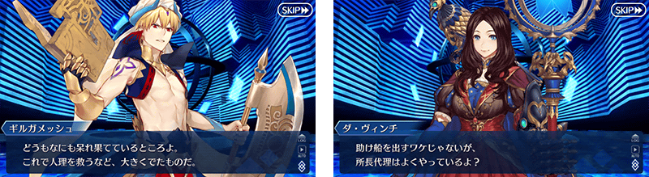
在MyRoom的「中意變更(お気に入り変更)」中，期間限定加入狀態的Servant變成可只在活動期間中以限定登錄成中意。
※期間限定加入的Servant以未正式加入狀態結束活動期間的情況，在活動期間結束後中意Servant會切換成瑪琇・基利艾拉特。
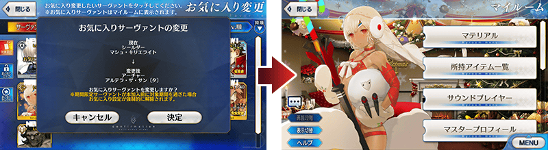
追加在進行「強化」時的畫面中，可統一選擇任意的Servant和概念禮裝，「統一挑選(まとめてセレクト)」鍵的追加、在挑選對象選擇的Servant和概念禮裝優先在上方顯示的「挑選排序(セレクトソート)」功能。
【統一挑選】
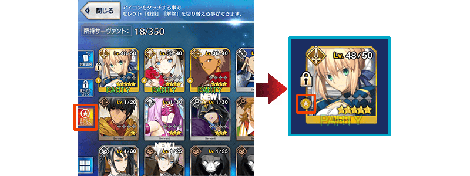
在使用「統一挑選」功能挑選對象中選擇的Servant附上「★」的圖示。
【挑選排序】
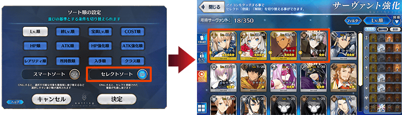
在進行「強化」的畫面，自排序順序的設定畫面把「挑選排序」功能調為ON的話，在挑選對象選擇的Servant會優先在上方顯示。
另外，在「靈基變還」畫面挑選對象的Servant會優先在下方顯示。
追加期間限定活動的關卡開始時，在「隊伍確認」和「支援選擇」畫面中選擇的Servant若是活動加成對象的情況，獲得數加成圖示的顯示功能。
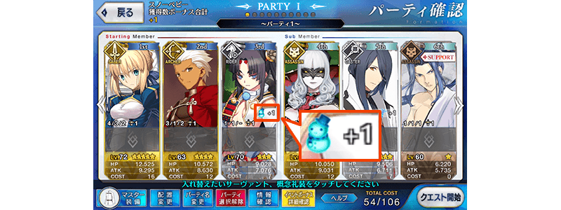
追加在Servant和概念禮裝的卡面詳細畫面中，點擊卡面圖像放大顯示的狀態進行拉伸，圖像會更加放大的功能。
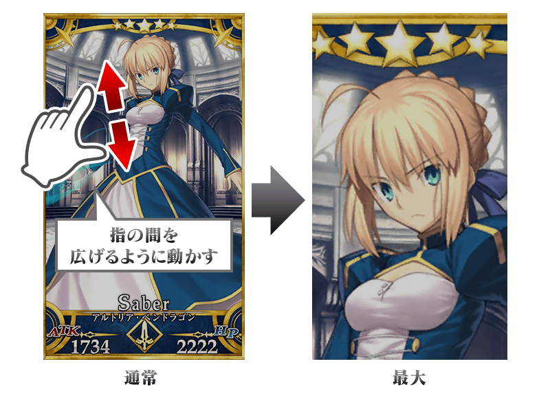
在戰鬥中防禦住弱體效果的賦予時，以往因賦予率而賦予失敗的情況，因弱體耐性防禦住的情況雙方都是顯示「MISS」， 但因弱體耐性成功防禦住的情況變成顯示「GUARD」，以便判別弱體耐性的作用。
戰鬥中，因技能等的效果，以賦予無敵或迴避狀態受到攻擊的情況，變成會顯示專用的特效。
另外，對賦予無敵狀態、迴避狀態的敵人，進行無敵貫通狀態、必中狀態的攻擊情況，變成會顯示抵銷無敵、迴避狀態的特效。
| 【無敵狀態】 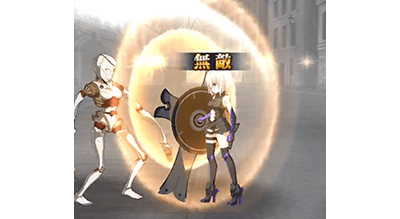 |
【無敵貫通狀態】 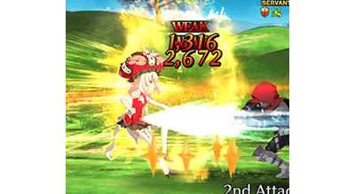 |
| 【迴避狀態】 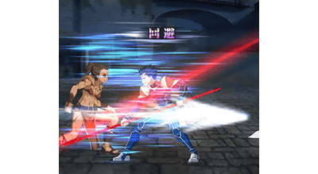 |
【必中狀態】 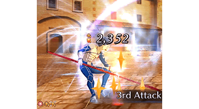 |
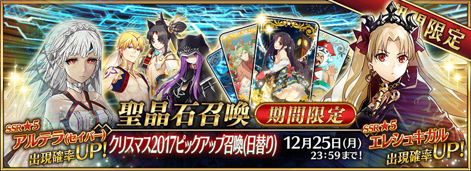
※12月13日(三) 20:30圖像修正
◆「聖誕節2017Pick Up召喚(每日交替)」期間◆
期間:2017年12月15日(五) 17:00～12月25日(一) 22:59
舉辦期間限定「聖誕節2017Pick Up召喚(每日交替)」！
初登場Servant「★5(SSR)艾蕾修卡」以期間限定登場！
※未到達第七特異點的狀態也能進行「聖誕節2017Pick Up召喚(每日交替)」。
另外，「★5(SSR)阿提拉(Saber)」以每日交替Pick Up！
還有，「★4(SR)美杜莎(Lancer)」「★4(SR)吉爾伽美什(Caster)」「★3(R)牛若丸」常駐Pick Up。
※請注意「聖誕節Pick Up召喚(每日交替)」做為每日交替，「★5(SSR)艾蕾修卡」在未Pick Up期間中會有不被抽到的日子。
※艾蕾修卡在Pick Up期間結束後不會追加到故事召喚。
※阿提拉(Saber)、美杜莎(Lancer)、吉爾伽美什(Caster)、牛若丸在Pick Up期間結束後也會在故事召喚抽到
詳情請在聖晶石召喚畫面左下的召喚詳細確認。
裝備期間限定概念禮裝「★5(SSR)スターリー・ナイツ」「★4(SR)パーティー・タイム」「★3(R)スノー・パイレーツ」的話會提升活動専用道具的掉落獲得數。
※「★3(R)スノー・パイレーツ」在Pick Up期間中，也能在友情點數召喚獲得。
Pick Up期間中，期間限定Servant、Pick Up Servant、期間限定概念禮裝的出現機率提升！
10次召喚中確定1張★4(SR)以上和確定1位★3(R)以上的Servant！
※確定★4(SR)以上包含Servant和概念禮裝。
※所謂「出現機率提升」意指比同稀有度的Servant及概念禮裝出現機率更高的設定。
| 每日交替Pick Up期間 | 每日交替Pick Up內容 |
|---|---|
| 12月15日(五) 17:00～ 12月18日(一) 22:59 |
艾蕾修卡 |
| 12月18日(一) 23:00～ 12月20日(三) 22:59 |
艾蕾修卡 阿提拉(Saber) |
| 12月20日(三) 23:00～ 12月22日(五) 22:59 |
阿提拉(Saber) |
| 12月22日(五) 23:00～ 12月25日(一) 22:59 |
艾蕾修卡 |
※請注意會以每日交替變更Pick Up的Servant。
介紹艾蕾修卡、阿提拉(Saber)的寶具演出！
在「Fate/Grand Order」官方網站內的公告中，公開了「★5(SSR)艾蕾修卡」「★5(SSR)阿提拉(Saber)」的寶具演出。敬請確認。
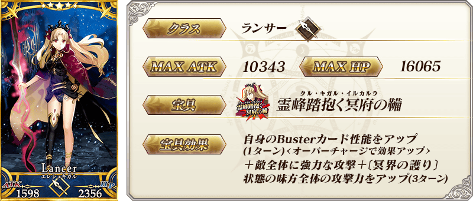

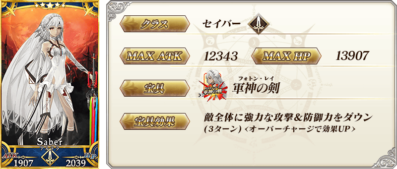
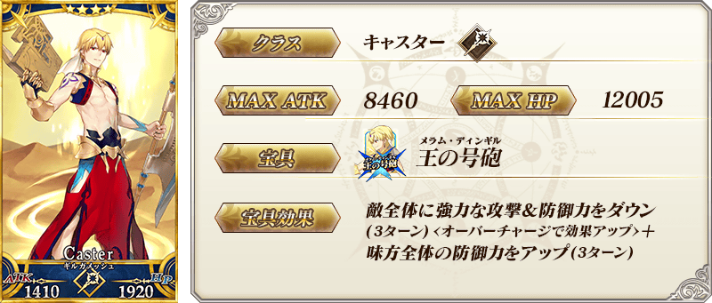
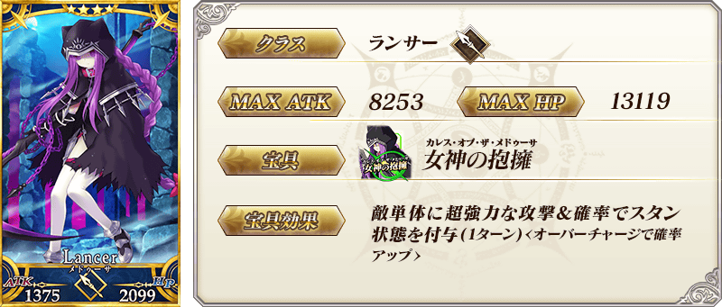

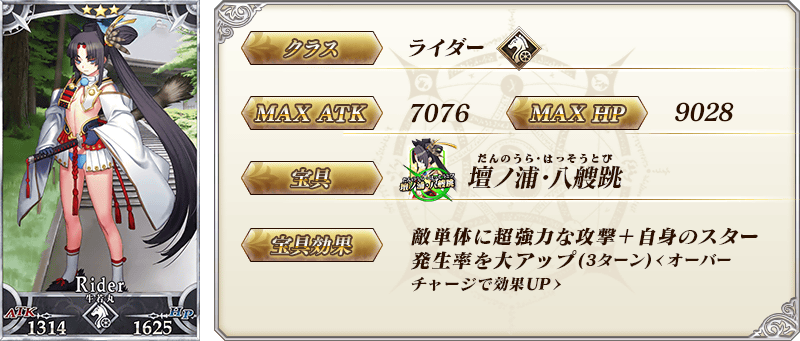
| 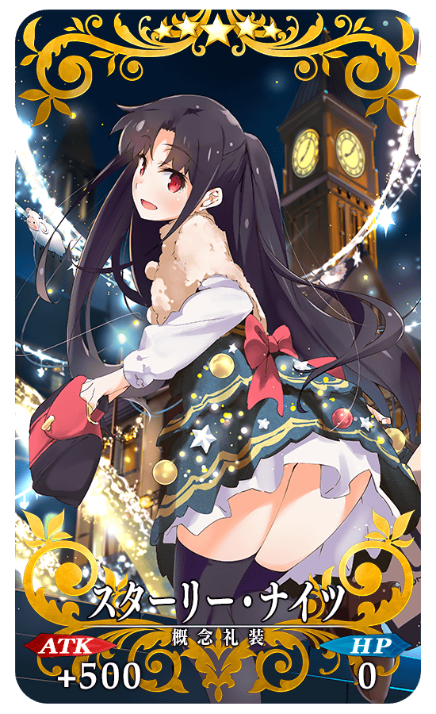 |
★★★★★SSR |
| ※12月13日(三) 20:30圖像修正 |
| 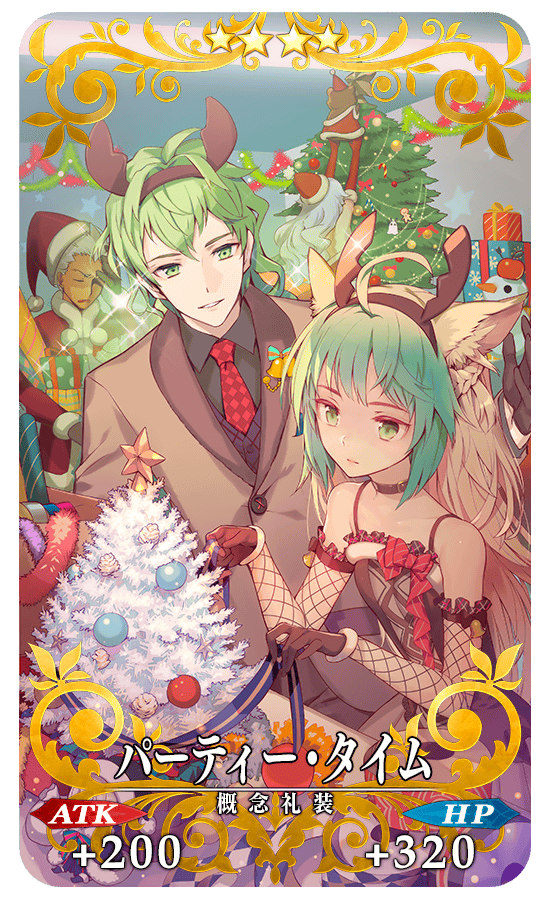 |
★★★★SR |
| 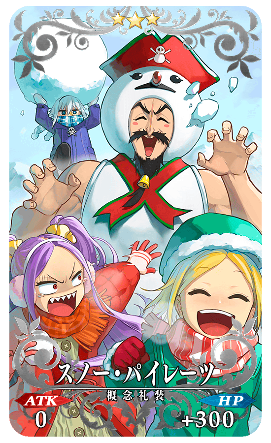 |
★★★R |
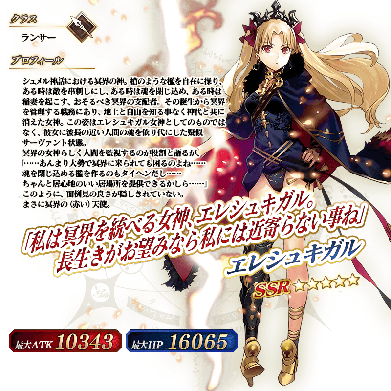
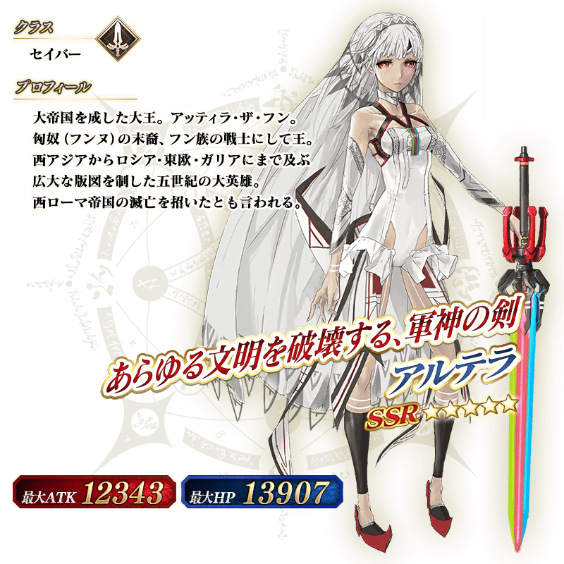